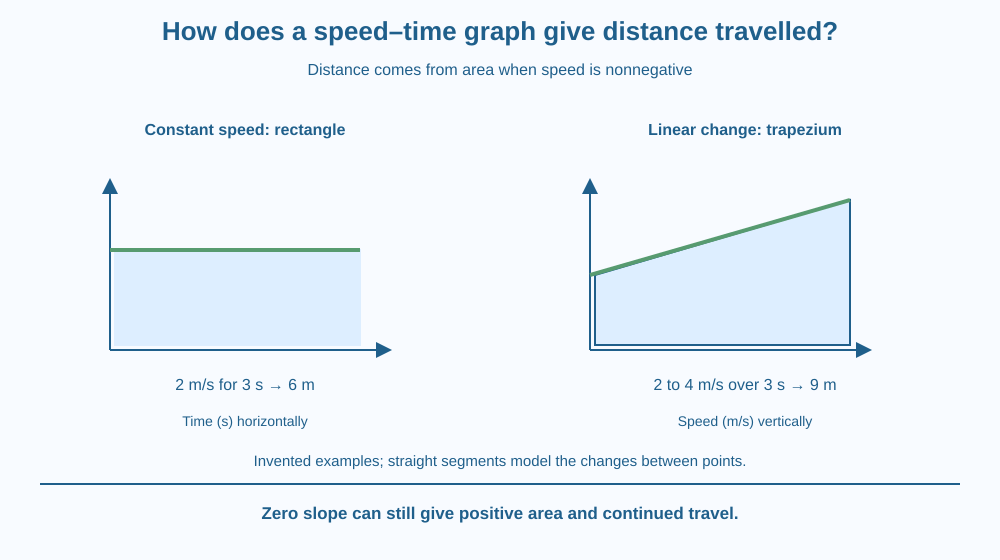

Calculate distance travelled from the area under a nonnegative speed–time graph. Distinguish rectangle and trapezium areas from visual line steepness. Explain why a horizontal speed line can represent continued travel while a horizontal distance line represents no added distance.
A speed graph shows a horizontal segment above zero. A student remembers that a flat segment meant a stop in an earlier graph lesson and concludes the traveller is standing still.
The mistake is not in recognising a horizontal line. It is in ignoring the changed vertical-axis quantity. Constant positive speed means movement continues, adding distance as time passes.
How can the graph tell you the amount added? Multiplying speed by duration gives distance, and on the graph that product appears as an area.
A speed–time graph places elapsed time on the horizontal axis and speed on the vertical axis. In this lesson speed is nonnegative. Its plotted values describe how fast path length is accumulating, not the traveller's position along a signed axis.
For constant speed, distance = speed × time interval. A graph segment at two metres per second lasting three seconds therefore represents an invented distance of six metres. The rectangular region below the segment has height two and width three.
The units show why the area is meaningful: metres per second multiplied by seconds gives metres. A drawn shape becomes a physical calculation only through its axis scales and units. Counting unscaled page squares is insufficient.
For several constant-speed intervals, calculate each rectangle's contribution and add them. A zero-speed interval adds no distance even though time passes. A higher rectangle or wider interval can contribute more distance.
If speed changes linearly between two values, the region under the straight segment is a trapezium. Its area is the average of the endpoint speeds multiplied by duration. For an invented increase from two to four metres per second over three seconds, the distance is nine metres.
The straight-line assumption matters. If actual speed varies differently between sparse observations, joining the points creates a model rather than proving the exact history. Finer measurements can support a better approximation of the area.
Slope answers a different question: how speed changes with time. A horizontal positive-speed line has zero slope but positive area, so it represents steady movement rather than zero distance. Confusing slope with area loses this distinction.
A velocity–time graph can contain signed values and relates area to displacement when interpreted correctly. That is a related but separate extension. We keep this lesson's speed nonnegative so the area directly represents accumulated travelled distance.
Imagine every short time strip adding a block of path length. The strip's height is speed and its width duration. Place the blocks side by side and add their areas.
For a rising straight segment, split the area into a rectangle plus a triangle or use the trapezium rule. Both are geometric descriptions of the same contribution when the line is straight.
Now put a distance–time graph beside it. Label both axes clearly before interpreting a flat part. In the first graph, flat distance means no accumulation; in the second, flat positive speed means constant accumulation. The line shape alone does not choose the meaning.
The SVG shows a constant-speed rectangle and a linearly rising trapezium under separate speed–time segments. Both axes carry units and their example areas are labelled as distances.
A small zero-speed interval lies on the time axis and contributes no area. Another caption distinguishes area from slope. The numbers are invented arithmetic examples, not a recorded vehicle journey.
The graphic deliberately avoids negative speed or a signed velocity axis. It also states the straight-segment modelling assumption so a simple drawing is not presented as exact knowledge of an unmeasured motion history.

Vehicle or sports data may be displayed as speed over time. A distance estimate from those data depends on the sampling interval and how the values between samples are modelled.
A phone's recorded speed is not automatically exact at every instant. A useful school calculation can explain the area relation while acknowledging that a real device adds measurement and sampling limits.
This lesson needs no trip on a road, phone use while moving or new sensor purchase. An invented graph provides a safer and clearer way to separate the mathematical relationship from the practical quality of a real tracking system.
Use squared paper, a ruler and a pencil.
Write invented example data on the page. Do not mix the two examples into an actual reported journey without saying so. Check units before arithmetic and record the assumption of linear change for the second shape.
Two graphs have different shapes but the same area under them over the same interval. What quantity can be equal even though their speed histories differ?
Now imagine a horizontal line at a larger speed but lasting a shorter time. Explain why visual height alone cannot rank distances. Both dimensions of the graph region contribute to the area.
What does area under a nonnegative speed–time graph represent?
Answer: A — Speed multiplied by time has distance units, and the contributions add over intervals.
Why does a horizontal line above zero not represent a stop?
Answer: B — The vertical value remains positive, so distance continues accumulating.
Invented speed is 2 m/s for 3 seconds. What distance is represented?
Answer: C — The rectangle gives 2 metres per second multiplied by 3 seconds, or 6 metres.
Design an invented three-stage speed history containing steady motion, a stop and a linearly changing interval. Calculate the distance contributed by each stage and the total.
Include a note distinguishing zero slope from zero speed. Your answer should also explain why the result would only approximate a real unmeasured history between sparse data points. No vehicle experiment is needed.
A flat line can mean travel continues or travel stops, depending on the vertical axis. Graph literacy begins with the quantities and units, not a memorised shape dictionary. The area relationship then follows from a physical unit calculation rather than an arbitrary drawing convention.
Area under a nonnegative speed–time graph gives travelled distance; a flat line above zero represents continued motion, not a stop.